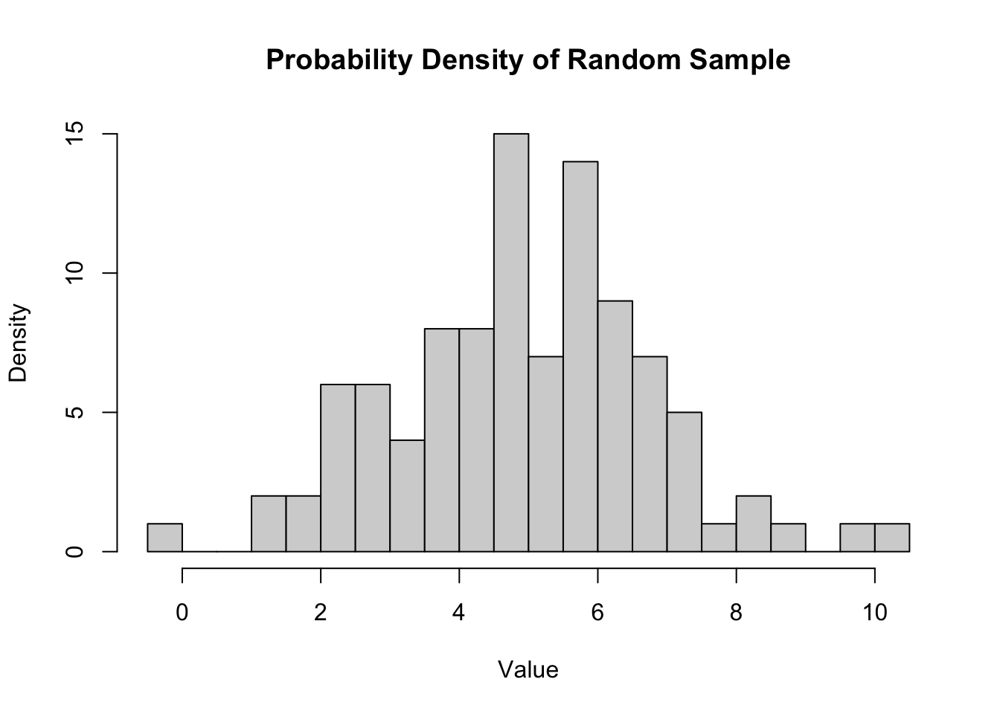
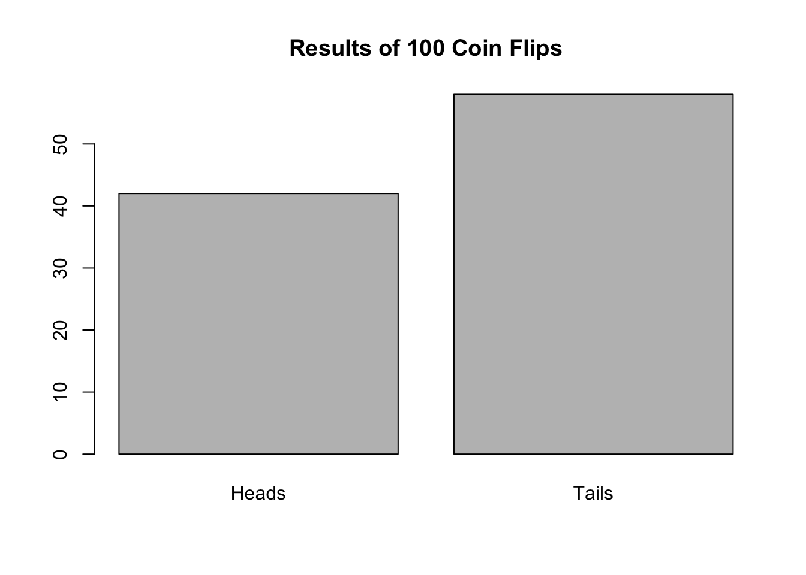

The Secrets of Uncertainty:Probability Theory and Random Variables
ml
code
analysis
Author
Akanksha Singh
Published
December 1, 2023
Probability theory and random variables lie at the very foundation of understanding uncertainty and building robust models. They provide the framework for quantifying the likelihood of events, analyzing data variability, and making informed decisions under uncertainty.
In this blog post, we’ll embark on a journey to explore the fundamental concepts of probability theory and random variables, using code and visualization to illustrate their applications and insights. We’ll delve into the important steps of the code, unraveling the hidden workings of these powerful tools and their ability to unlock the secrets of uncertainty.
Probability Theory: Quantifying Uncertainty
Probability theory allows us to quantify the likelihood of events occurring. It provides a mathematical framework for representing uncertainty and making predictions about the future based on past observations.
The fundamental concept in probability theory is the probability measure, which assigns a numerical value between 0 and 1 to an event, representing the likelihood of that event occurring. Events with a probability of 1 are certain to occur, while events with a probability of 0 are impossible.
Random Variables: Modeling Variability with Numbers
Random variables are mathematical objects that map random outcomes to numerical values. They provide a way to represent and analyze the variability inherent in many real-world phenomena.
There are two main types of random variables: discrete and continuous. Discrete random variables take on a finite or countable number of values, while continuous random variables can take on any value within a specified range.
Exploring Probability Distributions: Unveiling the Patterns
Probability distributions play a crucial role in understanding the behavior of random variables. They describe the probability of each possible value of a random variable.
Common probability distributions include:
Binomial distribution: Represents the number of successes in a fixed number of independent trials.
Poisson distribution: Describes the number of events occurring in a fixed interval of time or space.
Normal distribution: Also known as the “bell curve,” it represents a continuous random variable with a symmetrical bell-shaped distribution.
Visualizing Uncertainty: The Power of Probability Plots
Visualizing probability distributions using histograms, density plots, and probability density functions (PDFs) provides valuable insights into the behavior of random variables. These visualizations help us understand the central tendency, spread, and shape of the distribution, enabling us to make informed decisions and predictions.
Exploring Random Variables in R: A Hands-on Approach
Let’s delve into the world of probability and random variables using R, a powerful statistical computing language. We’ll explore the following:
Generating random samples: R provides various functions for generating random samples from different probability distributions.
Calculating probabilities: We can use R to calculate the probability of an event occurring based on the probability distribution of a random variable.
Visualizing data: R offers various tools for visualizing probability distributions, such as histograms, density plots, and PDFs.
Fitting probability distributions: We can use R to fit probability distributions to data, which helps us understand the underlying structure and make predictions about future data points
Here’s an example of how to generate a random sample from a normal distribution and visualize its probability density:
# Set the mean and standard deviation of the normal distributionmean <-5sd <-2# Generate a random sample of size 100sample <-rnorm(n =100, mean = mean, sd = sd)# Plot the probability density of the samplehist(sample, breaks =30, main ="Probability Density of Random Sample", xlab ="Value", ylab ="Density")

This code snippet demonstrates how to:
Set the mean and standard deviation of the normal distribution.
Generate a random sample of size 100 from the normal distribution.
Plot the probability density of the sample using a histogram.
This visualization provides insights into the central tendency and spread of the random sample, revealing the bell-shaped characteristic of the normal distribution.
Let’s see another example:
# Simulate coin flips and visualize the outcomes# Set the number of coin flipsn_flips <-100# Simulate coin flips (heads = 1, tails = 0)flips <-rbinom(n = n_flips, size =1, prob =0.5)# Count the number of heads and tailsheads <-sum(flips)tails <- n_flips - heads# Visualize the results as a bar plotbarplot(c(heads, tails), names.arg =c("Heads", "Tails"), main ="Results of 100 Coin Flips")

Simulate coin flips: The rbinom() function generates random binomial samples, representing coin flips in this case.
Count outcomes: The sum() function counts the number of heads and tails in the simulated results.
Visualize results: The barplot() function creates a bar chart to visually represent the frequency of heads and tails.
This example demonstrates how to simulate random events and visualize their outcomes using R, providing a visual understanding of probability distributions in practice.
Conclusion: Unlocking the Power of Probability Theory and Random Variables
Probability theory and random variables stand as fundamental pillars in data science and machine learning. They provide the tools and techniques to quantify uncertainty, analyze variability, and make informed decisions under uncertain conditions.
By exploring these concepts using R and code, we’ve gained practical insights into their applications and capabilities. From generating random samples and calculating probabilities to visualizing data and fitting probability distributions, probability theory and random variables empower us to unlock the secrets of uncertainty and navigate the world of data with confidence.
As we continue our journey in data science, mastering probability theory and random variables will remain essential for building robust models, extracting meaningful insights from data, and making informed decisions in the face of uncertainty.
Source Code
---title: "The Secrets of Uncertainty:Probability Theory and Random Variables"date: "2023-12-1"reading-time: "5 mins"categories: [ml, code, analysis]image: "probability.jpg"---Probability theory and random variables lie at the very foundation of understanding uncertainty and building robust models. They provide the framework for quantifying the likelihood of events, analyzing data variability, and making informed decisions under uncertainty.In this blog post, we'll embark on a journey to explore the fundamental concepts of probability theory and random variables, using code and visualization to illustrate their applications and insights. We'll delve into the important steps of the code, unraveling the hidden workings of these powerful tools and their ability to unlock the secrets of uncertainty.### Probability Theory: Quantifying UncertaintyProbability theory allows us to quantify the likelihood of events occurring. It provides a mathematical framework for representing uncertainty and making predictions about the future based on past observations.The fundamental concept in probability theory is the **probability measure**, which assigns a numerical value between 0 and 1 to an event, representing the likelihood of that event occurring. Events with a probability of 1 are certain to occur, while events with a probability of 0 are impossible.### Random Variables: Modeling Variability with NumbersRandom variables are mathematical objects that map random outcomes to numerical values. They provide a way to represent and analyze the variability inherent in many real-world phenomena.There are two main types of random variables: **discrete** and **continuous**. Discrete random variables take on a finite or countable number of values, while continuous random variables can take on any value within a specified range.### Exploring Probability Distributions: Unveiling the PatternsProbability distributions play a crucial role in understanding the behavior of random variables. They describe the probability of each possible value of a random variable.Common probability distributions include:- **Binomial distribution:** Represents the number of successes in a fixed number of independent trials.- **Poisson distribution:** Describes the number of events occurring in a fixed interval of time or space.- **Normal distribution:** Also known as the "bell curve," it represents a continuous random variable with a symmetrical bell-shaped distribution.### Visualizing Uncertainty: The Power of Probability PlotsVisualizing probability distributions using histograms, density plots, and probability density functions (PDFs) provides valuable insights into the behavior of random variables. These visualizations help us understand the central tendency, spread, and shape of the distribution, enabling us to make informed decisions and predictions.### Exploring Random Variables in R: A Hands-on ApproachLet's delve into the world of probability and random variables using R, a powerful statistical computing language. We'll explore the following:1. **Generating random samples:** R provides various functions for generating random samples from different probability distributions.2. **Calculating probabilities:** We can use R to calculate the probability of an event occurring based on the probability distribution of a random variable.3. **Visualizing data:** R offers various tools for visualizing probability distributions, such as histograms, density plots, and PDFs.4. **Fitting probability distributions:** We can use R to fit probability distributions to data, which helps us understand the underlying structure and make predictions about future data pointsHere's an example of how to generate a random sample from a normal distribution and visualize its probability density:```{r}# Set the mean and standard deviation of the normal distributionmean <-5sd <-2# Generate a random sample of size 100sample <-rnorm(n =100, mean = mean, sd = sd)# Plot the probability density of the samplehist(sample, breaks =30, main ="Probability Density of Random Sample", xlab ="Value", ylab ="Density")```This code snippet demonstrates how to:1. Set the mean and standard deviation of the normal distribution.2. Generate a random sample of size 100 from the normal distribution.3. Plot the probability density of the sample using a histogram.This visualization provides insights into the central tendency and spread of the random sample, revealing the bell-shaped characteristic of the normal distribution.Let's see another example:```{r}# Simulate coin flips and visualize the outcomes# Set the number of coin flipsn_flips <-100# Simulate coin flips (heads = 1, tails = 0)flips <-rbinom(n = n_flips, size =1, prob =0.5)# Count the number of heads and tailsheads <-sum(flips)tails <- n_flips - heads# Visualize the results as a bar plotbarplot(c(heads, tails), names.arg =c("Heads", "Tails"), main ="Results of 100 Coin Flips")```1. **Simulate coin flips:** The `rbinom()` function generates random binomial samples, representing coin flips in this case.2. **Count outcomes:** The `sum()` function counts the number of heads and tails in the simulated results.3. **Visualize results:** The `barplot()` function creates a bar chart to visually represent the frequency of heads and tails.This example demonstrates how to simulate random events and visualize their outcomes using R, providing a visual understanding of probability distributions in practice.### Conclusion: Unlocking the Power of Probability Theory and Random VariablesProbability theory and random variables stand as fundamental pillars in data science and machine learning. They provide the tools and techniques to quantify uncertainty, analyze variability, and make informed decisions under uncertain conditions.By exploring these concepts using R and code, we've gained practical insights into their applications and capabilities. From generating random samples and calculating probabilities to visualizing data and fitting probability distributions, probability theory and random variables empower us to unlock the secrets of uncertainty and navigate the world of data with confidence.As we continue our journey in data science, mastering probability theory and random variables will remain essential for building robust models, extracting meaningful insights from data, and making informed decisions in the face of uncertainty.